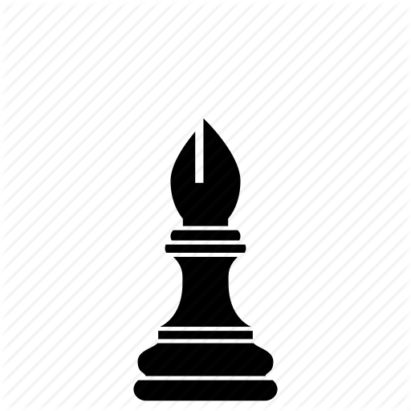

- 
Το σκάκι είναι παιχνίδι δυο παικτών σε μια βάση την σκακιέρα και με 16 πεσσούς για κάθε παίκτη 6 τύπων κάθε ένας εκ των οποίων έχει τον δικό του ιδιαίτερο τρόπο κίνησης. Σκοπός είναι η προστασία του βασιλιά και η επίτευξη ματ στον αντίπαλο βασιλιά. Η σκακιέρα είναι ένας πίνακας 8 επί 8 από άσπρα και μαύρα τετράγωνα. Οι πεσσοί χωρίζονται σε δύο στρατούς, κάθε παίκτης κατέχει έναν εκ των οποίων.
Για περισσότερα πατήστε εδώ
Ο Βασιλιάς (Ρ, ♔♚) είναι ένα από τα κομμάτια στο σκάκι. Η αιχμαλωσία του αντιπροσωπεύει τον σκοπό των παικτών. Αν ο βασιλιάς απειληθεί και δεν υπάρχει τρόπος διαφυγής τότε έχουμε ματ και η παρτίδα τελειώνει με νίκη του παίκτη που απειλεί τον αντίπαλο βασιλιά. Κάθε παίκτης ξεκινά με ένα βασιλιά, ο λευκός στο ε1 και ο μαύρος στο ε8.
Η βασίλισσα (B, ♕♛), που συχνά λέγεται και ντάμα είναι το ισχυρότερο κομμάτι στο σκάκι (η βασίλισσα και ο πύργος χαρακτηρίζονται και βαριά κομμάτια). Η κάθε παρτίδα σκάκι ξεκινά με τους παίκτες να έχουν μία βασίλισσα δίπλα στον βασιλιά τους (στο τετράγωνο δ1 η λευκή και στο τετράγωνο δ8 η μαύρη). Υπάρχει ένας μνημονικός κανόνας που λέει ότι το φόρεμα (χρώμα βασίλισσας) έχει το ίδιο χρώμα με τα παπούτσια (χρώμα τετραγώνου).
Ο πύργος (Π, ♖♜) είναι ένα από τα κομμάτια στο σκάκι. Είναι λιγότερο ισχυρός από την βασίλισσα αλλά ισχυρότερος από τον ίππο ή τον αξιωματικό (η βασίλισσα και ο πύργος χαρακτηρίζονται και βαριά κομμάτια). Κάθε παρτίδα σκάκι ξεκινά με κάθε παίκτη να έχει δύο πύργους, τοποθετημένους στις γωνίες της σκακιέρας (στα τετράγωνα α1 και θ1 για τα λευκά και στα τετράγωνα α8 και θ8 για τα μαύρα).
Ο αξιωματικός (Α, ♗♝) είναι ένα από τα κομμάτια στο σκάκι. Είναι λιγότερο ισχυρός από τον πύργο αλλά ανάλογης ισχύος με τον ίππο (ο ίππος και ο αξιωματικός χαρακτηρίζονται και ελαφριά κομμάτια). Στο σκάκι, κάθε παίκτης ξεκινά την παρτίδα με δύο αξιωματικούς, έναν λευκοτετράγωνο και ένα μαυροτετράγωνο δίπλα στον βασιλιά και τη βασίλισσα (στα τετράγωνα γ1 και ζ1 για τα λευκά και στα τετράγωνα γ8 και ζ8 για τα μαύρα). Λέγονται από πολλούς και τρελοί (από το γαλλικό τους όνομα fou, το οποίο χρησιμοποιείται και στα ελληνικά, που σημαίνει τρελός).
Ο ίππος (Ι, ♘♞), που συχνά λέγεται και άλογο, είναι ένα από τα κομμάτια στο σκάκι. Λιγότερο ισχυρός από τον πύργο αλλά ανάλογης ισχύος με τον αξιωματικό (ο ίππος και ο αξιωματικός χαρακτηρίζονται και ελαφριά κομμάτια). Κάθε παρτίδα σκακιού ξεκινά με τους παίκτες να έχουν δύο ίππους δίπλα στους πύργους τους (στα τετράγωνα β1 και η1 για τα λευκά και στα τετράγωνα β8 και η8 για τα μαύρα).
Το πιόνι (Σ, ♙♟), που συχνά λέγεται και στρατιώτης, είναι το πιο αδύνατο κομμάτι στο σκάκι. Η παρτίδα στο σκάκι ξεκινά με κάθε παίκτη να έχει 8 πιόνια στην μπροστινή του γραμμή (τη γραμμή που βρίσκεται απέναντι στα κομμάτια του συμπαίκτη). Δηλαδή στα τετράγωνα α2, β2, γ2, ... , θ2 τα λευκά και α7, β7, γ7, ... ,θ7 τα μαύρα.